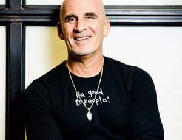

Social media is already the main marketing focus of most companies and they spend huge budgets on it. Regardless if you’re a small business or one of the giants of industry social media marketing should be your main priority. As such, it’s always a good idea to know what the trend is and use the newest techniques so you make the most out of it.
We wanted to know more about – Video content for social media – how crucial is it for your marketing in 2018?
So we asked over 100 experts in order to get a better idea on the subject. 21 of them found time in their busy schedule to answer this for you. Are you curious about what they had to say? It really gives you a better idea on what to concentrate on this year so find out below!
In no particular order( except the one the replies were received in), here’s what our 21 experts in the field of marketing had to say:
With the addition of live streaming we now have the ability to share all video, AND “all content,” in so many more ways, via more apps, with story-telling and engagement at the core. I find that I need to use this ability more, but also see so many using it way too much. So… standing out in a positive way is not easy. I have decided to make use of video here and there, make it something special, and when I think it adds value, instead of bombarding people constantly. You need to see how you can tell stories, create narratives, build relationships, communicate with consumers, and create learning for your organization… but pay attention to your relationships and connection nodes, and be sure to evolve as you go, and don’t lose sight of what was working before and still does. If you are only focused on the Money… You risk completely overlooking the People.
Always remember what is crucial in marketing is achieving your goals without doing damage to your brand. Customer experience is what will grow and sustain your brand over the long-term. So… if video content for social media facilitates that, cost-effectively, then by all means it is important. If not… then it most certainly is not.
Your Brand/Business is what you do; your Reputation is what people Remember and Share.
Ted Rubin – a leading Social Marketing Strategist, Keynote Speaker, Acting CMO of Brand Innovators , and Co-Founder of the recently launched Prevailing Path .
Find him on Twitter at https://twitter.com/tedrubin
Content marketing without video is like eating a Peanut butter & Jelly Sandwich without the Jelly. It’s not impossible, but it doesn’t go down as well.
Video, and especially live video, is hot! As more and more people consume content in smaller, bite-sized pieces due to their daily access to social media, video content has become crucial to reaching your target audience online. Video lets you tell your story to the consumer in a very short period of time. Video is both visually pleasing and auditory, hitting two senses at the same time.
If you aren’t creating video content in 2018, you are so 2015!
Dorien Morin-van Dam – Social media consultant and coach. She owns More In Media, a social media management and consulting agency.
You can find her on Twitter at https://twitter.com/MoreInMedia
Video is an absolute essential in my 2018 content marketing strategy and an element which more and more clients are appreciating. A video script simplifies difficult concepts and also provides an engaging explainer. I work predominantly with the fintech and finance sectors and there are certainly some difficult concepts to explain. I work with my clients to create stories that make finance fun whilst also improving social media interaction. With the new Facebook algorithm, I find that videos are one of the best ways to achieve a high and meaningful reach and engagement without spending thousands on boosting.
Charli Day – British writer and social media manager specializing in dynamic branding, campaign strategy and content engagement. Creative director at Content Works.
Find her on Twitter at https://twitter.com/charli_says
Video content is a must for any effective social media campaign in 2018. Not only are social media platforms weighting the scales in favor of more people being able to see that type of content, but it also resonates more with your audience when done right. It allows people to use more of their senses, and have a more “real” experience with the person they are following. So take advantage of that! Think about color, light, and sound when you create your videos. Engage with facial expressions and tone of voice. Try to visualize the person on the other side of the screen, and talk right to them. And then see where it takes you!
Rivka Hodgkinson – Social media strategist, content creator, author. Passionate about empowering people to make a positive world together.
Find her on Twitter at https://twitter.com/MeetRivka
Most of the traffic on the internet today is video, and that will continue to trend upward for the foreseeable future. Thus video in your marketing is a must.
Today, a new potential customer will look at your site, find the video, or leave. If you want them to stick around, include some video.
This is even more true on social media sites.
Warren Whitlock is a digital business development strategist. In 2008, he wrote the first book about Twitter and Mobile Marketing, and the best selling “Profitable Social Media: Business Results Without Playing Games.” His breakthrough strategies to integrate mobile marketing, public relations and lead generation with conversions to return on investment for lifetime value has helped hundreds businesses achieve rapid and continuing results from their marketing process.
Warren has worked in technology, business services, and broadcasting, and is currently involved with media, health and several startups.
Find him on Twitter at https://twitter.com/WarrenWhitlock
Remember to shoot your videos in different formats optimized for various platforms. Keep in mind, your fans love to see you in videos. Do pop in and say “hi.” My audience often messages to say they love my video clips. I am always thrilled to have feedback from my fans like “I would love to visit this place” after viewing my videos and photos.
I plan to incorporate more videos on my social channels. I would recommend adding drone video and photos to your own marketing plan.
Sharing through video footage gives an interactive glimpse to the viewers. Change your format and subject matter on your channels. People love to be entertained and surprised.
Hope you will join me – I love sharing my daily jaunts around Washington, D.C. on Instagram Stories at @anntranfashion while I’m home. I am looking forward to sharing new adventures with my fellow travelers this coming Spring.
Ann Tran is an internationally recognized influencer, in-demand public speaker, and travel writer. Ann has the ability to move people to action, which has contributed to the notable success of campaigns. Authentically and carefully she has built a highly engaged audience, purposefully cultivating a genuine connection with her readers through storytelling and video.
Find her on Twitter at https://twitter.com/AnnTran_
If you’re watching TV and you see a promotion which works better – a video or an image with text? We are media producers and need to promote our content in the most effective way.
Native video gets the most interaction on social channels and now we have the tools where you can create that video in seconds. If you want to step ahead of your competition and get more traffic to your content create a video ad for every one of your posts
Ian Cleary – ICoFounder of OutreachPlus, Founder of RazorSocial
You can find him on Twitter at https://twitter.com/iancleary
Video content is essential because it makes us relatable. Not only are the algorithms built to favor video, but so are people. Find the style that you’re comfortable with- live, filmed, etc. and jump on board.
The cost is not as high as it used to be and it takes less time than written content.
Cynthia Johnson – Co-Founder + CEO at http://bellivy.com. Entrepreneur, columnist, author, and writer focused on digital marketing and personal branding.
Find her on Twitter at https://twitter.com/cynthialive
This shouldn’t even be a question we need to ask in 2018. Yes video content is crucial for your marketing in 2018.
The real question you should be asking yourself is what actions are you taking to create remarkable videos that your ideal customers will actually want to watch?
To help you answer that question, I’ve written an article with 5 simple steps you can follow and examples of business that are creating winning video content.
Read the full article here: How To Make Business Videos People Will Watch
Daniel Knowlton – Digital Marketing Specialist and Co-Founder of KPS Digital Marketing
Find him on Twitter at https://twitter.com/dknowlton1
Video marketing is crucial for today’s marketing and it would be more important in the next three years. Video content is growthing exponentially, you can see as timeline Facebook is 70% video, Twitter and LinkedIn as well, but the most important video platform is YouTube. Is not just a social network is the second more use searcher in the world, and day by day more people use YouTube for finding new products, know more about a company, look for information that they need… and for companies is a marketing and sales tool, if you are not there your competitors will be and “stole” your potential customers. Do you want to keep growing your sales in the next 3 years? If so, start today integrating video content in your content marketing strategy.
Juan Merodio – Blogger at https://www.juanmerodio.com/, Speaker & International Advisor
Find him on Twitter at https://twitter.com/juanmerodio
Video was one of the biggest trends in 2017 and it is still the hottest content social formats this year. There will be more real and raw instead of polished fully edited videos. It will be more interactive and ecommerce friendly. You soon will be able to shop directly from video posts.
Cammi Pham – eCommerce and Growth Marketer at http://thinkrenegade.com/
Find her on Twitter at https://twitter.com/cammipham
Video has always been important – it is the fastest way to build an emotional connection with your audience because it allows them to see, hear, and experience you in a way that a written article cannot. However, in 2018, we are seeing video become especially important for social media because many social media algorithms are starting to favor it. On Facebook, video content gets better reach and engagement than other types of posts. Mark Zuckerberg has been vocal about the fact that he believes Facebook will consist entirely of video content in the next 5 years. This is largely due to the fact that people want video. We have short attention spans, and watching is more appealing than reading for many people. Millennial audiences (who most marketers want to target) prefer video over any other form of content because it’s easier to process, more immediate and more straightforward.
Think of all the ways video content has become important in our lives – from videos on websites and social media to live-streaming through sites like Netflix and Hulu. (Video streaming accounts for 2/3 of internet traffic currently, and is expected to grow to 80% by 2020.)
As marketers, video is powerful not only to help engage our audience, but also to help us learn about them. You can tell a lot about what your audience is interested in by how long they watch a video. We can use this content to gage engagement with a particular idea or subject. Conversation is the most natural form of communication for humans, and video is the closest form of content to conversation. It’s more immersive than email marketing or text posts. Using video to demonstrate a product, action or idea can help you communicate more clearly with your audience, which in turn helps drive action.
Katie Wagner – President at Katie Wagner Social Media, a digital marketing agency made up of journalists, specialized in content creation & social media management
Also find her on Twitter at https://twitter.com/SocialMediaPuma
Video is very important for social media marketing now more than ever. Considering the second largest search engine is Youtube, having your content come up there in search results is crucial. But video content is also important when it comes to social sharing, as interesting videos are simply more shareworthy than text!
Here at HerPaperRoute, we offer free resources and training on how to develop your blog into a business, and we find that one of the biggest social marketing traffic sources for us comes from our promotional video content.
If you are a blogger and/or online entrepreneur, be sure to make use of video content in your marketing strategy. Video marketing is only going to get bigger!
Chelsea C. – She runs HerPaperRoute as a resource for new, aspiring and blossoming bloggers to create a profitable blog and business. She has been a professional Marketing Strategist and blogger for 15 years
Connect on Twitter at https://twitter.com/herpaperroute
Video is the new language that consumers are speaking. If our brands don’t understand the language (the tools used to record or go live, the platforms in which we share this video content) we will be left standing on the outside of all conversations. Everyone is talking about it. Everyone knows that video content is being shared more, consumed more, and preferred by all social platforms, but still few are actually taking action.
The big question is, “WHY?” Why are so few brands actually using video content? It could be the desire for perfection. Waiting on acquiring the right equipment and finding the right scriptwriters and the right actors or talent to be on video. Live video is out of the question for the perfection-seekers since there are just so many areas where things can go terribly IMPERFECT!
Some might be paralyzed by their lack of knowledge in using today’s video content platforms. Facebook Live, Instagram Live, Twitter Live, YouTube Live and LinkedIn video sharing are just a few being used today.
The key to getting really good at using video content in 2018 is to simply START. Don’t wait. Don’t script. Just jot down your top FAQs and then hit that red record button and answer one question at a time.
You can’t get great until you get started!
Gina Schreck – CEO at SocialKNX a content marketing & social media management agency
Follow her on Twitter at https://twitter.com/Ginaschreck
If you want your business to succeed in 2018 you have to include video in your social media marketing plan. People want to make a connection with a ‘real’ person they can relate to and prefer video over text and images.
And if you’re uneasy about doing long videos, a great starting point would be social media platforms like Snapchat and Instagram stories. Although the reach may be smaller, these temporary videos have a tendency to have better engagement.
Corina Ramos – WordPress web designer and virtual service provider. Helping small businesses and bloggers with social media and website management at https://www.corinaramos.net
Connect with her on Twitter at https://twitter.com/corirams
Live video marketing is particularly key to my Blogging From Paradise brand and social media marketing campaign. Folks say they know me better – like a real, dyed in the wool, friend – through my live videos on Facebook and Twitter. Video is big in 2018 and will be forever as long as humans enjoy connecting with humans. Seeing someone on video adds a human, genuine, connecting element to your marketing campaign.
Ryan Biddulph – author of the Blogging from Paradise eBook series, a full time blogger, coach and internet lifestyle junkie.
Follow him on Twitter at https://twitter.com/RyanBiddulph
Video content is by far one of the most powerful ways to connect with your audience and create a real relationship with them in a 2018 world.
Beyond the benefits of being able to incorporate a face, personality and authenticity to your content, using video marketing as a cornerstone of your digital marketing strategy in 2018 is one of the most effective ways to build a retargeting list of engaged viewers.
A perfect example of this is building retargeting lists from your Facebook Video content based on the total % of video your audience has consumed, and then retargeting the most engaged viewers with more content which is relevant to the initial video they have consumed.
I dive into this strategy in depth one of my YouTube Tutorials – How To Improve Your Facebook Video Watch Time
Paul Ramondo – CEO at RamondoMedia and blogger on his personal blog.
He helps Entrepreneurs and Marketers drive qualified leads to their website using Facebook Ads and Digital Marketing Funnels
Find him on Twitter at https://twitter.com/paulramondo
Video content has by far the largest share in the content mix for strategies I am writing in 2018. Facebook’s investment into video alone speaks to the importance of brands focusing their efforts on high-quality video content over the next year. It’s also important to note what type of video content is outperforming the rest. Social media networks are above and beyond promoting videos that are natively shared to their networks over videos that are shared via a YouTube link. This completely changes the way brands think about video production. Now, instead of creating longer YouTube videos, it’s critical to create videos under the networks’ max amount of time.
Marji J. Sherman is an experienced social media strategist and she has written impactful social media strategies for many large brands.
Her website houses her social media and lifestyle blog, as well as ‘Almost Everything I Wish I’d Said The Last Time I Saw You,’ a blog featuring her photography and creative writing.
Get in touch with her on Twitter at https://twitter.com/MarjiJSherman
 The technology to produce, view, and stream video has never been easier, cheaper or more accessible. That being said, many B2B companies have chosen to use video simply as a platform to disseminate product features and competitor comparisons. What a wasted opportunity!
The technology to produce, view, and stream video has never been easier, cheaper or more accessible. That being said, many B2B companies have chosen to use video simply as a platform to disseminate product features and competitor comparisons. What a wasted opportunity!
Instead of this tired, outdated approach, B2B organizations should take a cue from B2C marketers and produce videos that actually tell stories that reinforce the brand. Video storytelling is such a powerful way to create an emotional connection with a brand that it’s a must for any organization hoping to resonate with its target audience.
Drew Neisser, Founder & CEO – Renegade
Find him on Twitter at https://twitter.com/DrewNeisser
It’s no secret that people love videos. Whether we’re trying to learn a new skill or simply amuse ourselves with funny cat shenanigans, we gravitate towards video content. There’s an immediacy and conversational nature to video that allows us to grasp complex ideas and feel a sense of connection. We’re no different as consumers. When we’re considering a product or interacting with a brand, video content draws us in, and when video is combined with powerful storytelling, the result opens our hearts and minds, not to mention wallets.
The growing use of mobile devices by young and old alike — to browse, socialize, and shop — and the resulting saturated news feeds and strained attention spans are equal contributors to the popularity of video.
In fact, in 2017, online video accounted for 74% of all online traffic.
Impressed?
You should also know:
Four times as many consumers would prefer to watch a video about a product than to read about it, and using the word “video” in an email subject line boosts open rates by 19% and click-through rates by 65%.
Of course, it’s not just about the statistics. The Zen Media video department specializes in custom video strategies that take into account both the behaviors of the connected consumer and the personas of your target audience to create a final product that’s memorable, as well as strategically positioned to boost your ROI and market share.
Shama Hyder – http://shamahyder.com/ – is a visionary strategist for the digital age, a web and TV personality, a bestselling author, and the award-winning CEO of The Marketing Zen Group – a global online marketing and digital PR company.
Follow her on Twitter at https://twitter.com/Shama
We’ve all seen the stats. Video is not just king, but emperor! Once you create awesome video, don’t just let it sit there. Share it! How? Here’s 7 quick ways to promote your video: Pin it to the top of your Twitter feed. Play video at every event where you’re presenting. Share with online communities. Use it in your email marketing. Test video in your Facebook and Instagram Ad strategy. Cross-promote with other brands. Interview other influencers in your field and have them share your content. Basically, create a promotional map and PR strategy to reach your key prospects and customers – and keep the process going. That way, you get the biggest bang for your buck!
Robin Samora – http://robinsamora.com – PR / Small Business Marketing Expert, Mentor, Speaker
Connect with her on Twitter at https://twitter.com/robinsamora
Conclusion
Here you have it, all experts agree – social media video marketing is a must! Will you heed their advice and start doing it?
Do you have another perspective? – Share it with us in a comment below!
Cori Ramos says
Hi Jarvee,
Thanks so much for including me in this round up. There are some familiar faces here and some new ones I will be connecting with thanks to you! I enjoyed reading everyone’s input here.
Passing this along!
Cori
Adam says
Thank you for taking the time to respond Cori, glad to have the chance to add your insights so everyone can benefit from them!
Alfredo Ocampo says
I agree with Ted Rubin, SO many people are not being unique in their ways of marketing, very few stand out. Effective marketing most certainly requires one to stand among the crowd, and those doing it are reaping the benefits for sure!
Benito says
“If you are only focused on the Money… You risk completely overlooking the People.” Short but golden advise !
Adam says
Indeed 🙂
Hugo says
I know this is out of context but I disagree with Dorien
I eat a peanut butter sandwich without the jelly, I actually find it better without jelly lol.
Adam says
Haha 🙂
Bobby says
Charli is on point when she says video helps out on explaining difficult concepts. Sometimes there are things that are better visually explained and video does a great job in it
Adam says
Definitely, just some people are scared to do video for some reason..
Wahaj says
What is the best time duration for a good explainer video so as to not lose attention of the user?
Daniel says
This mostly depends on the type of content. If it is an advertisement it shouldn’t be longer then 2-3 minutes.
Adam says
Depends on what you have to explain – I guess a couple of minutes should be ideal though.
Alex says
Algorithms these days DEFINITELY favor video marketing more. I mean it’s logical, it benefits the traffic as well as the platform. People who aren’t using it have definitely gone nuts.
Adam says
Or don’t know it works so well 🙂 Thanks for the comment!
Alan says
Rivka is a genius. When she says that one should visualize the person on the other side of the screen and THEN communicate your message, she is giving off a golden nugget here for free
Isma says
From my experience, I saw a 20% decrease in bounce rate on my webpage when I added a video explaining my product.
Adam says
Not bad, for 20% everyone should do this..
Lola says
If Video marketing is so powerful, why do so many people resort to content?
Jack says
There are many people who still think that internet marketing is not effective and actually FEAR it. The thing is, some people are just fearful, some don’t research or split test, and some are stuck in denial, which is why they resort to old methods.
Adam says
It’s just easier and they are used to it already!
Samir says
+1 for the idea of drone videos, I have conducted my own tests those get more engagement if the video is designed and recorded properly.
Adam says
And plus you can have fun with the drone once you finish recording 🙂
Emily Standley says
Love this post! It’s true to remain relevant and hip in 2019 you are very wise to include video in your promotions, blog and website. And there are so many channels that make it super easy to post a good video without being an expert. I love a good roundup of experienced bloggers to brainstorm from! Thank you for posting this informative and helpful ‘evergreen’ post!
Katlyn Morse says
Thank you guys for sharing this with us. It’s so interesting when you can see what different people that you follow online are saying about the same topic 🙂
Ellice says
So many great opinions on one place! Thank you guys. I would love to hear what they have to say about video content in 2020!
Serghei Imolutov says
Very nice article, it’s applicable at any moment. My question is, can I use it for my Master degree final essay? 😀
Scarlett Arias says
A great tip that I would mention is to create videos that are optimized for multiple social networks. This wouldn’t be easy since every social network requires different formats, but this would save you money and your content would keep the same identity through social networks.
Foreman says
So many good tips, so many quoted authors and so many influencers on one place. I must read the article again, just to check did I missed something.
Ella Lindberg says
I really like the Gina Schreck content (statement).The perfect video maybe never showup, but 10 middle quality videos will stay and they will help us more than none existing one